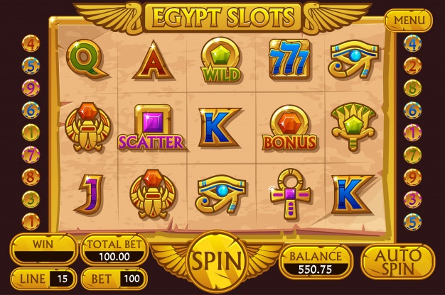

Seven Things to Consider Prior to Accepting Bonus Cash from Online Casinos
New casinos are appearing nearly every day on the internet and they all offer some kind of incentive to attract new players. Bonuses for depositing new players daily bonuses, cash back for losses as well as monthly promotions and compensation rewards are only some of the examples of the incentives currently being provided. Before you sign up for these bonuses, you must learn about the terms and conditions which have been set at the discretion of the casino. Situs Judi Slot Online Terpercaya After acquiring all the information you need, you will be able to make a better choice regarding whether or not would like to avail the bonuses that are offered.
1.) The first and most important thing is that you must examine the kinds of bonuses the casino you are playing at is offering. Most casinos, including Lucky Live Casino, have one form of "Initial deposit bonus" that pays an amount of your initial deposit at a set amount. For instance, Smart Live Casino is offering 150% on your initial deposit up to PS300, and Lucky Live Casino is offering 100% of the initial deposit, up to 100. There are also bonuses that are paid out for deposits made by players who are already playing as well as monthly promotions which provide a higher bonus for a specific period of time. Many casinos also provide bonuses for "friends," such as a "friend" bonus such as "Refer a friend" that will pay for each player you bring to the casino or Comp Rewards for those who play at casinos frequently. One of the latest bonuses that is gaining popularity is one where the player gets paid a percentage of the losses they suffer over a certain amount of time.

2.) Certain bonuses sound quite appealing however, you'll discover that they are limited in the amount of times they are able to be used. One example could be the Bonus for Signing-On that is only available when a player makes their first deposit to the casino. Once the first deposit has been made, the bonus will not be available, even if decide to reconsider your decision. The best option is to research the possibility of a "second deposit reward" or an "Comp Point" reward program. These reward offers are usually accessible for many and/or all subsequent deposits. The Refer a Friend Bonus is almost infinite, and you will be paid for every participants you actually transfer. The monthly promotions or drawings are only valid for the specific amount of time and have a certain deadline date and time. The majority of drawings require an amount of deposit that must be met to be considered eligible.
3.) Wagering Requirements are always associated with bonuses in order to stop players from taking the bonus cash and later cashing it out. In essence it can be defined as the amount that must be gambled before a player is allowed to take a cash withdrawal from their player account when they accept the bonus funds. A majority of casinos require wagers to be equal to what is the value of the deposit in addition to the amount of bonus, multiplied a specific amount of times. An excellent example is Circus Casino which you must wager for first Deposit Bonus of 25 percent. If you deposit an initial deposit of $150 and the bonus amount is 150, the wagering requirements is 25 times 150 times 150, which is 7500. There are some casinos have higher wagering requirements and some casinos have more modest. There are typically additional restrictions to bonuses, so don't only look at the amount in order to decide the best bonus.
4.) The other limitations you may find inside the "fine print" could be the restrictions on the games suitable for wagering requirements. In certain casinos, for instance, all wagers placed on Slots games count to the wagering requirements however, only bets placed that are placed on the live roulette is counted as live blackjack, and the wagering requirements are only partly applied. These restrictions are usually laid into the conditions and terms of the promotion you are interested in. It may be necessary to look into the details to uncover the details, but it's certainly in your best interest to research this information prior to you sign any agreements.
5) Another aspect you must consider is the method by which the bonus you're interested in is distributed. While the majority of them are paid in cash deposits to your player account however, certain bonuses are paid in prizes, or as entries to drawings for prizes or as points that can be converted into cash or prizes.
6.) The most crucial and time-consuming facts you'll need to do is to go through the section on rules and regulations. Situs Judi Slot Online Terpercaya They are extremely specific, and although they're not interesting reading, it is vital to know before beginning playing. If you want to experience the live dealers, you should look for bonus offers that support live dealer games, and make you pay to play these games. It's not going to do anyone any good to accept an offer that prevents your from participating in the sports you love the most.
7) The last, but definitely not least, you'll be required to know what penalties you will face for making a withdrawal prior to having met the wagering conditions. The majority of casinos won't allow you to withdraw bonus moneyor cash you win due to this bonusuntil wagering conditions are fulfilled. If you deposit money and take advantage of the bonus given, there will be two separate deposits placed to your account. One to make your initial deposit, and the other for your bonus. The wagers you make will be credited to the "bonus pool" until you have met your wagering requirements or until the balance is zeroed out. After the wagering requirement has been completed, the funds in the "bonus pool" will be deposited into the player's account. It can then be withdrawn whenever you like. If you attempt to withdraw before that time the deadline, you'll forfeit your bonus funds and any winnings associated with it. This is why you must be certain that you will be able to fulfill all the conditions attached to any offer before you accept it.
As you can observe, from afar many bonuses appear attractive and appealing and appealing, which is exactly what they're supposed perform. However, you must know the rules of every bonus to avoid any unpleasant surprises later on for you. Most trustworthy casinos are open and transparent about their bonus offers and, to be fair many of the bonus programs are quite decent. These programs aren't suitable for everyone it is important to ensure that you've got all the details you need to make an informed decision. It doesn't matter if you prefer live dealer games and RNG games, gaming should be enjoyable for you and that is only possible when you fully understand what you're doing. Make sure you are equipped with the right information and get ready to enjoy yourself! Have a great time!